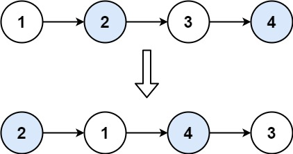

题面
给你一个链表，两两交换其中相邻的节点，并返回交换后链表的头节点。你必须在不修改节点内部的值的情况下完成本题（即，只能进行节点交换）。
示例 1：

输入： head = [1,2,3,4]
输出：[2,1,4,3]示例 2：
输入： head = []
输出：[]示例 3：
输入： head = [1]
输出：[1]提示：
- 链表中节点的数目在范围
[0, 100]内 0 <= Node.val <= 100
解法一 迭代
思路
- 每轮交换一对节点，需要追踪 4 个位置：
node0 → node1 → node2 → node3 node0：当前对的前驱节点，负责把next指向交换后的新头node1：当前对的第一个节点，交换后变成后面那个node2：当前对的第二个节点，交换后变成前面那个node3：下一对的起点（提前存好，因为操作会破坏链接）- 每轮三步改指针，顺序不能错：
node0.next = node2：前驱指向新的第一个node2.next = node1：第二个指向第一个（完成交换）node1.next = node3：第一个的 next 接上后面
- 推进到下一对：
node0 = node1，node1 = node3 node0和node1是最基础的两个变量，node2和node3每轮由它们推导出来，所以只需更新这两个- 循环条件
while node1 and node1.next：至少还剩两个节点才能交换，只剩一个或为空就停
代码实现
class Solution:
def swapPairs(self, head: Optional[ListNode]) -> Optional[ListNode]:
node0 = dum = ListNode(0, head)
node1 = head
while node1 and node1.next: # 至少要两个节点才能换，node1 永远是下一对的第一个
node2 = node1.next
node3 = node1.next.next
node0.next = node2
node2.next = node1
node1.next = node3
# node0、node1 是基础变量，node2、node3 每轮由它们推导，只更新这两个就够了
node0 = node1
node1 = node3
return dum.next- 复杂度：时间 O(n)，空间 O(1)
解法二 递归
思路
- 和迭代逻辑相同，但有几个关键差异：
- 终止条件和迭代的 while 条件正好相反：迭代是"有两个节点就继续"，递归是"不足两个节点就返回"
- `node1.next = self.swapPairs(node3)` 而不是 `node1.next = node3`：后面的节点对也需要交换，直接接
node3只处理了当前一对，递归调用负责把后面全部换好再接上来 - `return node2` 是告诉上一层"这对的新头是谁"：交换完后 node2 成了这一对的头，相当于迭代里的 node0 的作用——上一层的
node1.next接的就是这个返回值 - 终止时返回 `head` 而不是 `None`：递归的返回值会被上一层当作
.next接入链表。问自己"终止时还有没有节点需要保留？"——有→返回head；没有→返回None。例如两数相加终止时没有数字也没有进位，真的什么都不剩了，所以返回None；而本题终止时可能还剩一个节点，必须返回它，否则节点丢失 - 为什么先 `node1.next = self.swapPairs(node3)`，再 `node2.next = node1`？ 两行改的是不同节点的指针，调换顺序功能上没问题。但原顺序更安全：如果先写
node2.next = node1，此时 node1.next 还是 node2，会短暂产生循环引用（node1 → node2 → node1），再执行node1.next = ...才打断。原顺序则始终干净，没有临时的环。理解方式：node2.next = node1是"逆向连接"，感觉像反向操作，自然放在自调用之后，先把正向的 node1 指向确定好，再做逆向的连接
代码实现
class Solution:
def swapPairs(self, head: Optional[ListNode]) -> Optional[ListNode]:
if head is None or head.next is None: # 不足两个节点，原样返回
return head
node1 = head # node1、node2、node3 都是交换前的原始位置
node2 = node1.next
node3 = node1.next.next
node1.next = self.swapPairs(node3) # node1 接上后续已交换好的链表
node2.next = node1 # node2 指向 node1，完成交换
return node2 # 交换后 node2 是新头，返回给上一层- 复杂度：时间 O(n)，空间 O(n)（递归调用栈）